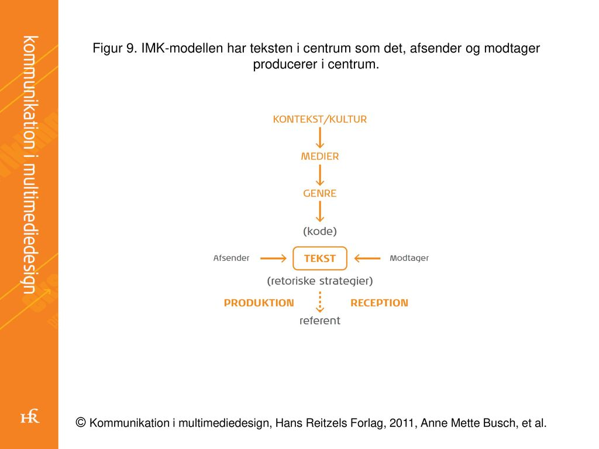

Som multimediedesignere er det vigtigt at producere et produkt. Men ligeså vigtigt er det at få dette produkt solgt - eller udarbejdet på den rigtige måde. Vi skal derfor kunne kommunikere korrekt - og ikke mindst kende til kommunikationen i sin helhed, da denne også er ubevidst i mange tilfælde. Vi kan intet gøre uden at kommunikere - og vi kommunikerer faktisk uden at gøre noget.
I denne sektion vil du kunne læse lidt om de vigtigeste punkter under kommunikationen.
Som mennesker kommunikerer vi hele tiden. Om så det er gennem tekst, billeder, musik, sanser, verbalt eller nonverbalt.
Nonverbal kommunikation, også kendt som kropssprog; kan ofte sige mere end den verbale, og det er derfor afgørende at man som afsender forstår sig på at observere denne kommunikation. Dette er især også vigtigt i forhold til Kvalitativ Metode, da intervieweren ikke blot skal kunne tolke den information der bliver givet verbalt, men den information der bliver kommunikeret i sin helhed.
Det er kun en lille procentdel af kommunikation som ligger i selve ordene.
Det nonverbale fylder op imod 55% af alt kommunikation, om så det er i en samtale eller under et foredrag. Det kan eksempelvis være bevægelsen eller udseenet som kommunikere. Hvis man bevæger sig unaturligt, eller evt. trækker på skuldrene, ryster eller andet; kommunikerer det mere, end de ord der bliver sagt. Ligeledes går man i gammelt laset tøj, eller har man et fint jakkesæt på, giver det modtageren forskellig vinkel på den kommunikation som bliver givet.
Den nonverbale kommunikation sker for det meste ubevidst. Vi er ikke selv i kontrol over vores kropssignaler - og vi er derfor ekstremt hurtigt dømmende. Som regel former vi vores dom i løbet af 10-20 sekunder fra vi har mødt et nyt ansigt. Bliver der talt til os, hører vi budskabet med vores følelser og sympati, og derefter afspejler vi vores egne nonverbale signaler helt automatisk.
Vi benytter os i høj grad af tvetydelig verbal kommunikation i hverdagen, og vi kommunikerer det gerne gennem sarkasme eller ironi. Vi siger måske noget, men mener noget andet; og har endda en forventning om, at modtageren forstår det. Tvetydig kommunikation er forskellig fra hver nationalitet og kultur - og kan derfor ofte skabe misforståelser. Dette kan igen også lade sig påvirke af den nonverbale kommunikation - som kan fortælle os, om vi skal forstå en givet kommunikation som sjov eller alvorlig.
Man kan helt grundlæggende dele kommunikationsteorierne op i to forskellige paradigmer
Det humaniske paradigme også kaldt Interaktionsparadigmet; bygger grundlæggende på interaktionen mellem mennesker. Det opfatter mennesket som aktivt og behovsstyret. Helt overordnet betragter paradigmet afsender og modtager som ligestillet - da der skal en modtager til for at fortolke det afsendte. Det er nødvendigt at anvende visse undersøgelsesmetoder, som giver mulighed for at opnå, hvad præcist modtageren oplever i kommunikationen. En god metode at bruge her ville være den Kvalitative metode.
Kilder: (Septrup og Fruensgaard 2010) (Kommunikation i Multimediedesign)
Her er en række karakteristiske træk i det humanistiske kommunikationsparadigme:

Det samfundsvidenskablige pardigme har fokus på afsenderen som den styrende i kommunikationsprocesen. Traditionelt set trækkes der her på de samfundsvidenskabelige fagområder, så som politik, sociologi, økonomi og jura. I modsætning til Det humanistke paradigme er Det samfundsvidenskablige paradigme karakteriseret ved en tro på, at "verden er forudsigelig og at man kan planlægge med udgangspunkt i stabile omgivelser og faste strukture"(s.76 i Kommunikation i Multimediedesign) Afsenderen er dermed en genstand for den største interesse, og hovedformålet er at forudsige resultatet som en given handling vil medføre.
Her er en række karakteristiske træk for det samfundsvidenskablige paradigme